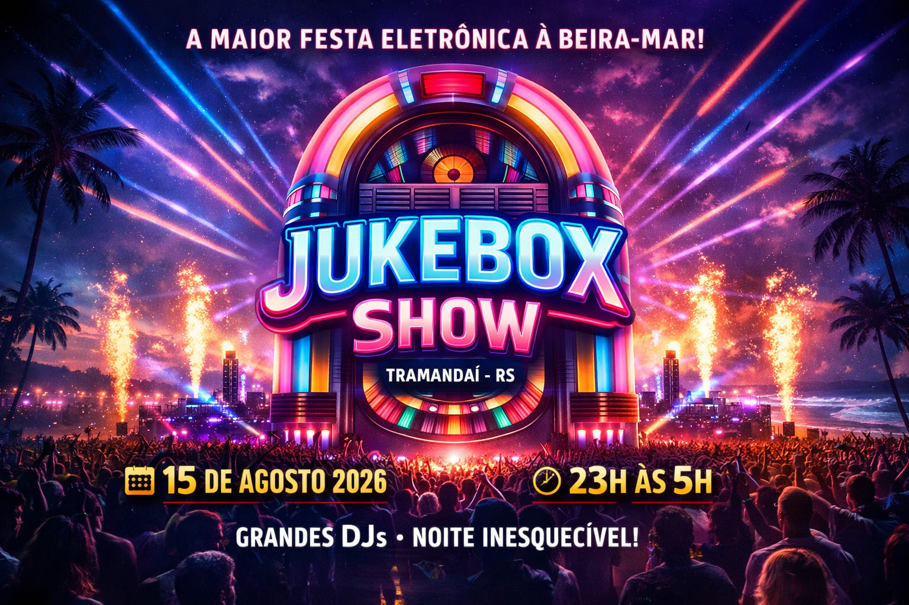
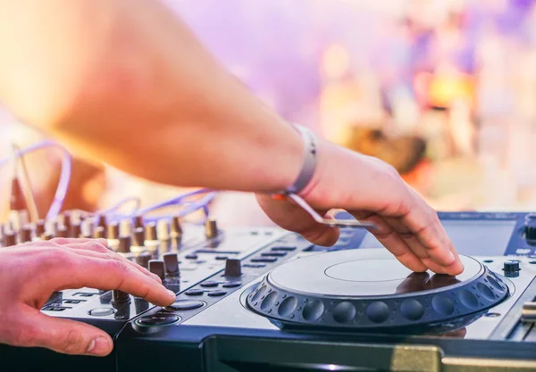
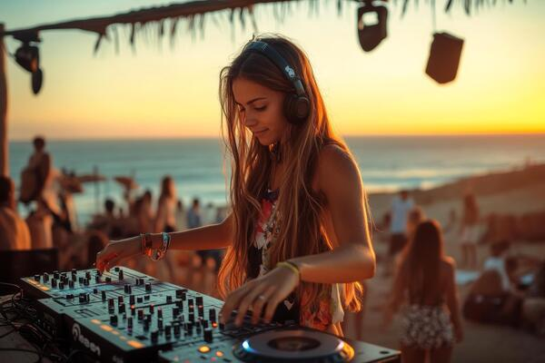
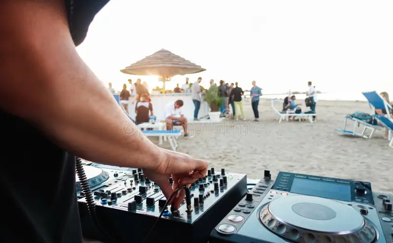
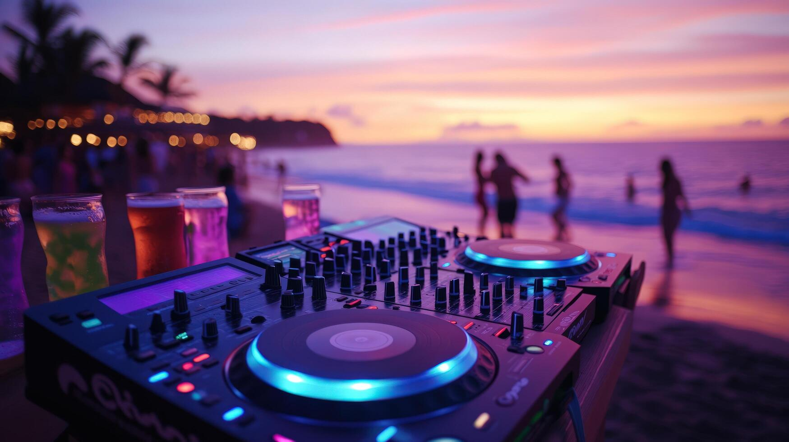
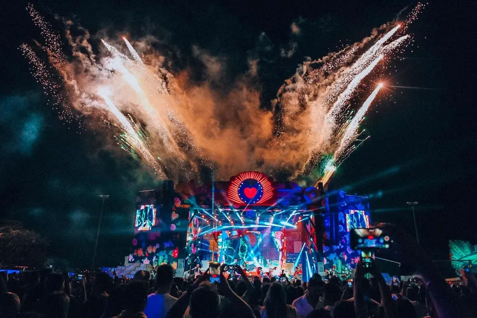
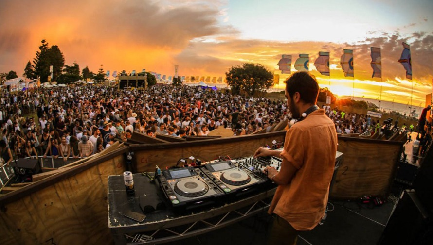

Prepare-se para uma noite inesquecível de música eletrônica! O Jukebox Show reúne grandes DJs em Tramandaí para uma experiência única à beira-mar, com muita energia, luzes e batidas que vão fazer a pista vibrar até o amanhecer.









O Jukebox Show é um encontro de DJs dedicado aos amantes da música eletrônica. O evento promete uma
noite
intensa de batidas eletrônicas, iluminação especial e uma atmosfera vibrante à beira-mar.
Durante a madrugada, diferentes DJs irão se apresentar com estilos variados de música eletrônica,
criando
uma experiência dinâmica e envolvente para o público. A proposta do evento é reunir pessoas que
compartilham
a paixão pela música, pela dança e por grandes experiências noturnas.
Data: 15 de agosto de 2026
Horário: 23h às 5h
Classificação: 18 anos
Ingressos: Limitados
Prepare-se para uma noite inesquecível com muita música, energia e diversão.
Confira os DJs que irão comandar a pista durante a noite:
23:00 — Abertura
- DJ Lucas Vega – Warm Up (Deep House)
00:00
- DJ Marina Pulse – House / Progressive
01:00
- DJ Kairo Beats – Tech House
02:00
- DJ Solaris – EDM / Festival Set
03:30
- DJ Neon Drive – Electro / Big Room
04:30 — Encerramento
- DJ EchoWave – Closing Set (Melodic Techno)